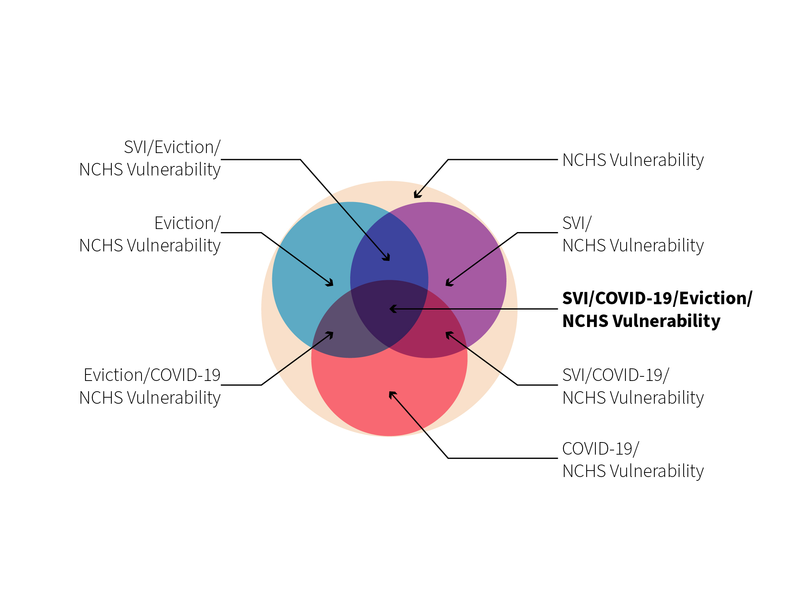
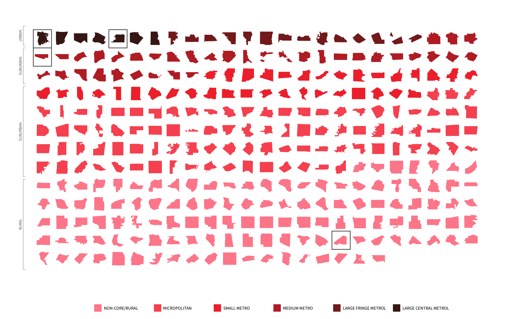

1 / 2

Site Selection Metric
2 / 2

Site Selection Metric
The coronavirus has exacerbated many of the conditions that make a community vulnerable. These conditions range from state, county or census tract level. For the project Staying Power: An Anti-Eviction Toolkit, we focused on four (4) indicators to measure vulnerability at county level. These included the Coronavirus case count, the overall Social Vulnerability Index, eviction filing rates and the National Center for Health and Statistics Classification (NCHC) which classifies counties in the United States into 6 categories: Large Central Metro, Large Fringe Metro, Medium Metro, Small Metro, Micropolitan and Noncore (rural).
The image below shows how we focused mapped these four metrics individually to located vulnerable counties based on one metric. Then, all of these metrics were combined to locate counties that were affected by more than one of these vulnerability indicators.We specifically focused on looking at urban, suburban, rural settings throughout the United States to help us locate potential sites.
The graphic below is a legend we created to synthesized the four metrics we chose. The color range helped vizualized the range in vulnerability in the United States based on colors the color overlap. This legend helped us isolate the counties that were affected by all four metrics which made them the most vulnerable.
In the map below we combined all of the metrics into one graphic, depicting all levels of vulnerability as described in the legend above. This map gave us a sense of how vulnerability was distributed throughout the United States. This image is the first layer in our research that helped us understand how each of the most vulnerable counties is being affected and the sites where our research should be focused.
The second map isolates the most vulnerable counties with the metrics that we set for ourselves, specifically highlighting four counties that were of interest to us which include an urban, suburban and rural setting.
We sorted the counties on a grid based on their classification. It was a useful tool to see the range of places and their scales that fit within our metric of vulnerability.
We looked at these counties in relation to one another and selected the Bronx County in New York, Shelby County in Tennessee, Pima County in Arizona and Barnwell County in South Carolina. In the graphics below you can see what these countries look like through the satellite images. It was helpful to see demographics, context, architecture, and density.
We wanted to get a more granular understanding of the conditions of the counties we selected, so we looked at each metric we selected based by census tract. In the graph below, you can see how we show vulnerability at tract level for each of our four sites. Then, we highlighted the most vulnerable census tract in each county. We again looked at demographics, architecture, and density for better understanding of the context.
In the slideshow below, we identified specific sites (buildings) where eviction rates were disproportionately high based on the data that we used from the Anti-Eviction Mapping Group and the Eviction Lab.
The first image is of the site in the Bronx County, New York. We zoomed in on census tract 53, which is home to the River Park Towers. The River Park Towers have one of the highest rates of eviction. It is owned by Eugene Schneur, who is the third highest evictor in the city. The towers were also hit incredibly hard early on in the pandemic, getting this write up in the New York Times, referring to them as ‘death towers’.
The second site is in Shelby county. We also selected a census tract 220.22, a very vulnerable area in the south of Memphis. The eviction filing rate stood at 85.27%. We specifically identified New Horizon Apartments, which are owned by Rhodium Capital Advisors, a real estate equity firm in Manhattan. Since the start of the pandemic, Rhodium Capital Advisors has evicted 62 tenants.
The third site is in Pima County. We zoomed in into census tract 26.03. This is a county that has seen over 20 evictions since July 1. This is when eviction proceedings were allowed to continue.
And lastly, we looked into Barnwell County. Within this tract, many evictions came from a LLC called Low Country Housing of Barnwell. In addition to renting units, the company sells manufactured homes, which they market as an ‘affordable’ american dream. However as a landlord, they filed over 90 evictions with the Barnwell county magistrate in 2019. In South Carolina, the eviction filing fee is $40, so it is an often used tactic by landlords.